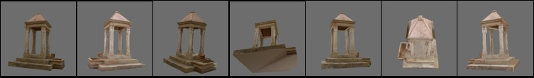

Elements of Multiple View Geometry for Computer Vision
Scuola di Dottorato in Ingegneria dell'Infomazione
Indirizzo di Ingegneria Informatica ed Elettronica Industriali
Università degli Studi di Padova
Andrea Fusiello
Giugno-Luglio 2005

Reading list
- On triangulation, Hartley CVPR 2004
- On the multifocal relationships, Yi Ma et al. in IJCV 2004
- On the multibody Fundamental matrix, Vidal et al. in IJCV 2002
- On projective reconstruction, Mahamud et al. in CVPR 2001
- On autocalibration, Pollefeys et al. in IJCV 1999 and ECCV 2002
- On multicamera calibration, Svoboda et al. in Presence 2005
- On projective rectification, Hartley in IJCV 1999
- On features for wide-baseline matching, Lowe's SIFT in IJCV 2004
- On features for wide-baseline matching, Mikolajczyk et al. in IJCV 2004
Images of the model of the "tempietto" in Verona courtesy of M. Farenzena and A. Lanciere.